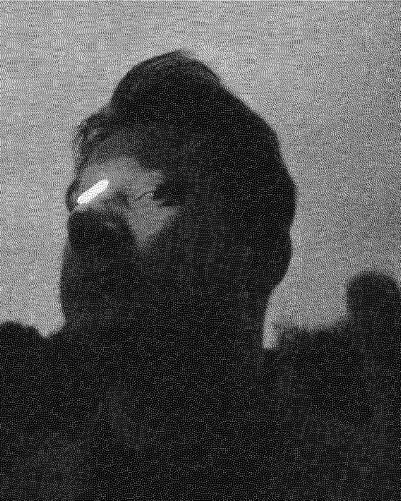

Андрій ГорбальAndrew Horbal
Луцьк, УкраїнаLutsk, Ukraine
Художник, волонтер і тату-майстер.
Родом з Луцька. З 2009 року займається стріт-артом. Магістр монументального живопису. У творчості розвиває абстракцію в різних формах — ташизм, геометрія, експресія. Основні авторські проєкти — «Live line» та «Different together». Також працює з колажем, скульптурою, постерами і стікерами.
Учасник всеукраїнських та міжнародних виставок, фестивалів і мистецьких резиденцій. Його роботи можна побачити як у вуличному просторі, так і в галереях України та за кордоном, у приватних колекціях.
З початку повномасштабного вторгнення документує удари росії по українських містах. Активно займається волонтерською діяльністю: створює арт-обʼєкти, тубуси й короби для аукціонів, кошти з яких йдуть на підтримку ЗСУ.
An artist, volunteer, and tattoo master.
Originally from Lutsk. He has been engaged in street art since 2009. He holds a Master's degree in monumental painting. In his artistic practice, he develops abstraction in various forms — tachisme, geometry, and expression. His main author projects are “Live Line” and “Different Together.” He also works with collage, sculpture, posters, and stickers.
A participant of national and international exhibitions, festivals, and art residencies. His works can be seen both in public urban spaces and in galleries across Ukraine and abroad, as well as in private collections.
Since the beginning of the full-scale invasion, he has been documenting Russia's attacks on Ukrainian cities. He is actively engaged in volunteer work: creating art objects, tubes, and boxes for auctions, with all funds directed to support the Armed Forces of Ukraine.